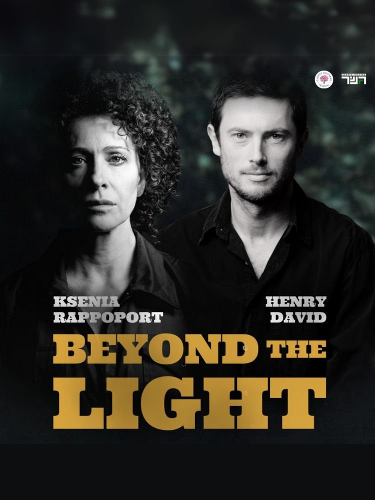
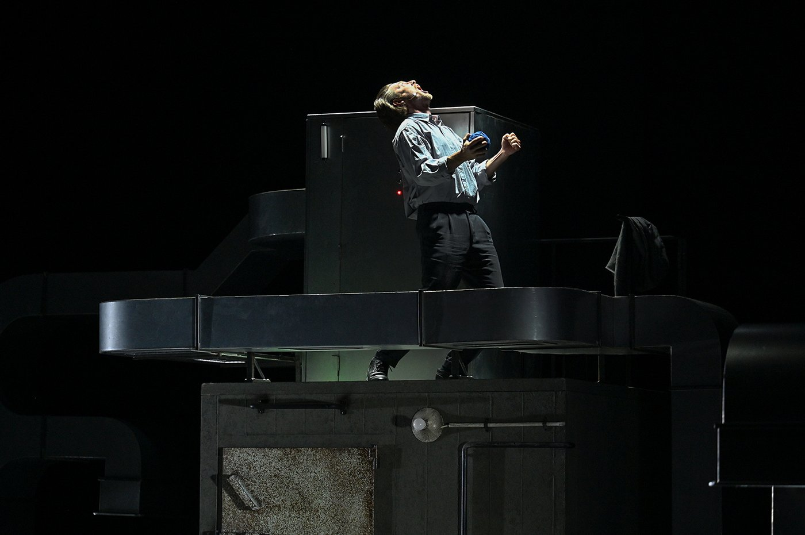
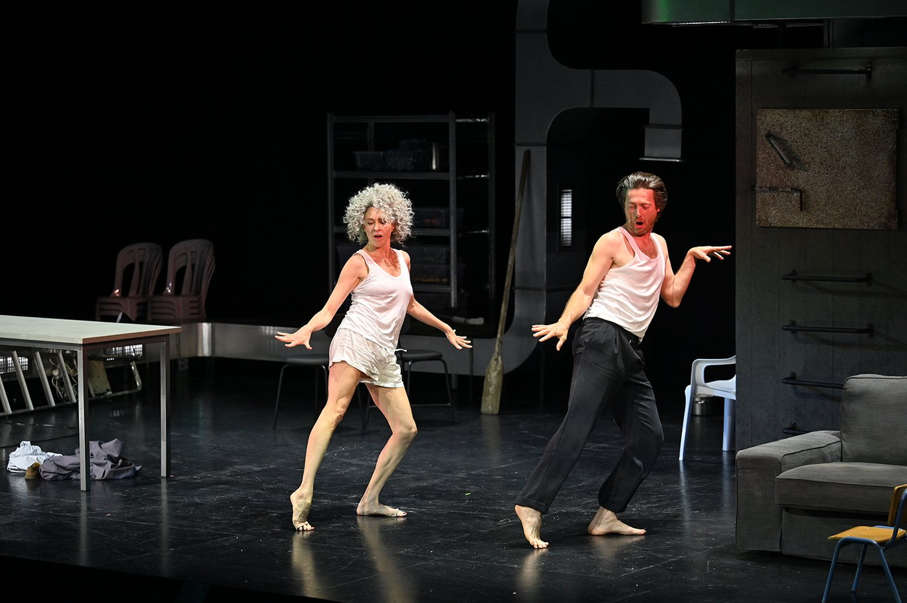
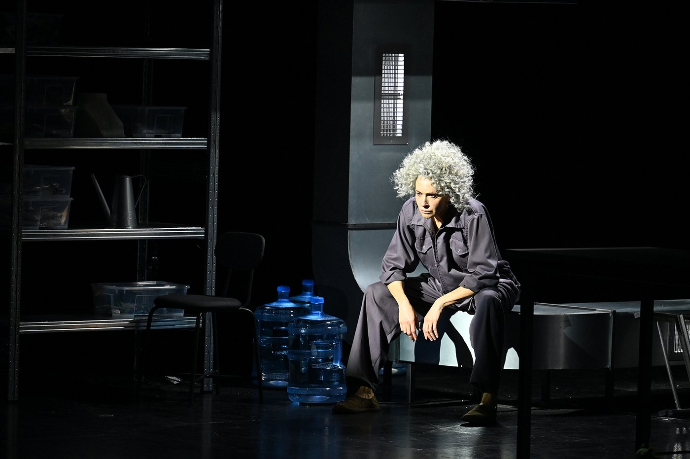
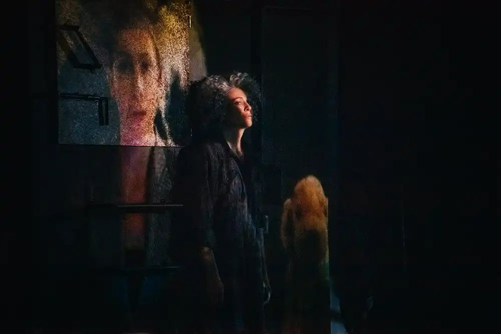
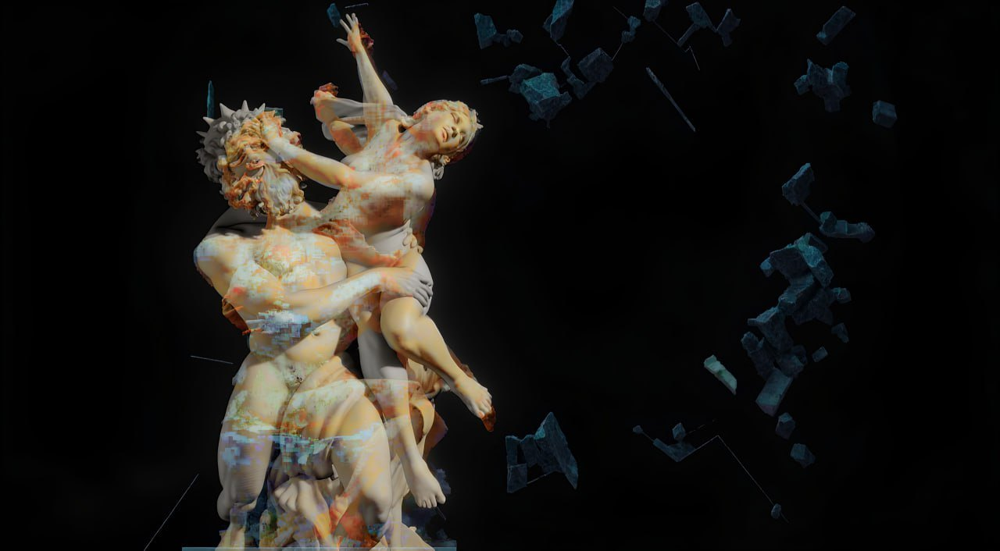
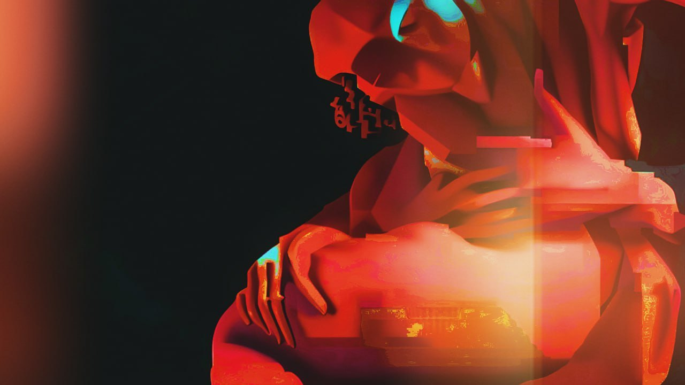

תקציר
הפקת דגל של תיאטרון גשר בבימוי אבדותיה סמירנובה, עם קסניה רפופורט והנרי דוד בתפקידים הראשיים. המופע חוקר זיכרון, שכחה והישרדות דרך מיזוג של תעודה, שירה וחלום, והפך לאחת הבכורות המדוברות של העונה הישראלית — כולל סיבוב הופעות בינלאומי (פסטיבל Cherry Orchard, ארה"ב/קנדה, 2025).
צוות
- בימוי: אבדותיה (דוניה) סמירנובה
- עיצוב וידאו ומולטימדיה: ניק דריידן
- בכורה: אפריל 2025, הבמה הגדולה, תיאטרון גשר
ניק דריידן — וידאו ומולטימדיה
דריידן פיתח פרטיטורה חזותית מלאה למופע: הקרנות, דימויי ארכיון וויזואליזציות AI השזורות בפעולה החיה. הטרנספורמציות שיצר — ובראשן המורף של פסל החירות אל אנדרטת "אם המולדת", שצוין בעיתונות בארה"ב כאחד מרגעיו החזקים של המופע — תוארו שוב ושוב כמספר־שותף של הדרמה: מדיום החושף, מסתיר ומעוות זיכרון לצד השחקנים. ה"אור" המוקרן פועל כמספר שני.
תהודה
הביקורת ציינה "מרחב מסוגנן ומאוכלס", דיוק "ברודוויי" של ההרצה ותפאורה ועיצוב כרכיבים מכוננים; הכרטיסים אזלו, והעיתונות דיווחה על "גל ביקורות נלהבות". קהל ובלוגרים הצביעו על שכבת הווידאו כעל היסוד שהעניק למופע את האטמוספרה הבלתי־נשכחת שלו.
גלריה






